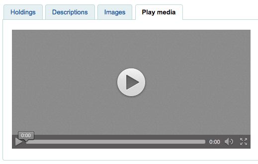
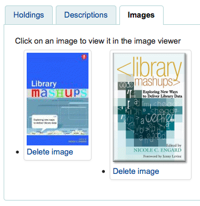

Enhanced content
Get there: More > Administration > Global system preferences > Enhanced content
Important
Always read the terms of service associated with external data sources to be sure that you are using the products within the allowed limits.
Note
You cannot have more than one service for cover images (including local cover images) set up. If you set up more than one you will get multiple cover images. Instead choose only one source for cover images.
All
FRBRizeEditions
Default: Don’t show
Asks: ___ other editions of an item on the staff client
Values:
Don’t show
Show

Description:
Using the rules set forth in the Functional Requirements for Bibliographic records, this option, when enabled, pulls all editions of the same title available in your collection regardless of material type. Items will appear under an ‘Editions’ tab on the detail page for the title in question.. According to Libraries Unlimited’s Online Dictionary for Library and Information Science (http://lu.com/odlis/), FRBRizing the catalog involves collating MARC records of similar materials. FRBRization brings together entities (sets of Works, Expressions, or Manifestations), rather than just sets of Items. It can aid patrons in selecting related items, expressions, and manifestations that will serve their needs. When it is set to “Show”, the OPAC will query one or more ISBN web services for associated ISBNs and display an Editions tab on the details pages. Once this preference is enabled, the library must select one of the ISBN options (such as ThingISBN). This option is only for the Staff Client - the OPACFRBRizeEditions option must be enabled to have the Editions tab appear on the OPAC.
Important
Requires that you turn on one or more of the ISBN services (such as ThingISBN).
OPACFRBRizeEditions
Default: Don’t show
Asks: ___ other editions of an item on the OPAC.
Description:
Using the rules set forth in the Functional Requirements for Bibliographic records, this option, when enabled, pulls all editions of the same title available in your collection regardless of material type. Items will appear under an ‘Editions’ tab on the detail page for the title in question.. According to Libraries Unlimited’s Online Dictionary for Library and Information Science (http://lu.com/odlis/), FRBRizing the catalog involves collating MARC records of similar materials. FRBRization brings together entities (sets of Works, Expressions, or Manifestations), rather than just sets of Items. It can aid patrons in selecting related items, expressions, and manifestations that will serve their needs. When it is set to “Show”, the OPAC will query one or more ISBN web services for associated ISBNs and display an Editions tab on the details pages. Once this preference is enabled, the library must select one of the ISBN options (such as ThingISBN). This option is only for the OPAC - the FRBRizeEditions option must be turned “On” to have the Editions tab appear on the Staff Client.
Values:
Don’t show
Show

This preference pulls all editions of the same title available in your collection regardless of material type. Items will appear under an ‘Editions’ tab on the detail page for the title in question.
Important
Requires that you turn on one or more of the ISBN services (such as ThingISBN).
Amazon
AmazonAssocTag
Asks: Put the associate tag ___ on links to Amazon.
Note
This can net your library referral fees if a patron decides to buy an item after clicking through to Amazon from your site.
Description:
An Amazon Associates Tag allows a library to earn a percentage of all purchases made on Amazon when a patron accesses Amazon’s site via links on the library’s website. More information about the Amazon Associates program is available at Amazon’s Affiliate Program’s website, https://affiliate-program.amazon.com/. Before a tag can be obtained, however, the library must first apply for an Amazon Web Services (AWS) account. Applications are free of charge and can be made at http://aws.amazon.com. Once an AWS account has been established, the library can then obtain the Amazon Associates Tag.
Sign up at: https://affiliate-program.amazon.com/
AmazonCoverImages
Default: Don’t show
Asks: ___ cover images from Amazon on search results and item detail pages on the staff interface.
Values:
Don’t show
Show
Description:
This preference makes it possible to either allow or prevent Amazon cover images from being displayed in the Staff Client. Cover images are retrieved by Amazon, which pulls the content based on the first ISBN number in the item’s MARC record. Amazon offers this service free of charge. If the value for this preference is set to “Show”, the cover images will appear in the Staff Client, and if it is set to “Don’t show”, the images will not appear. Finally, if you’re using Amazon cover images, all other cover image services must be disabled. If they are not disabled, they will prevent AmazonCoverImages from functioning properly.
AmazonLocale
Default: American
Asks: Use Amazon data from its ___ website.
Value:
American
British
Canadian
French
German
Indian
Japanese
OPACAmazonCoverImages
Default: Don’t show
Asks: ___ cover images from Amazon on search results and item detail pages on the OPAC.
Values:
Don’t show
Show
Description:
This preference makes it possible to either allow or prevent Amazon cover images from being displayed in the OPAC. Cover images are retrieved by Amazon, which pulls the content based on the first ISBN number in the item’s MARC record. Amazon offers this service free of charge. If the value for this preference is set to “Show”, the cover images will appear in the OPAC, and if it is set to “Don’t show”, the images will not appear. Finally, if you’re using Amazon cover images, all other cover image services must be disabled. If they are not disabled, they will prevent AmazonCoverImages from functioning properly.
Babelthèque
Babelthèque
Default: Don’t
Asks: ___ include information (such as reviews and citations) from Babelthèque in item detail pages on the OPAC.
Description:
This preference makes it possible to display a Babelthèque tab in the OPAC, allowing patrons to access tags, reviews, and additional title information provided by Babelthèque. The information which Babelthèque supplies is drawn from the French language-based Babelio.com, a French service similar to LibraryThing for Libraries. More information about Babelthèque is available through its website, http://www.babeltheque.com. Libraries that wish to allow access to this information must first register for the service at http://www.babeltheque.com. Please note that this information is only provided in French.
Values:
Do

Don’t
Babeltheque_url_js
Asks: ___ Defined the url for the Babelthèque javascript file (eg. http://www.babeltheque.com/bw_XX.js)
Babeltheque_url_update
Asks: ___ Defined the url for the Babelthèque update periodically (eq. http://www.babeltheque.com/…/file.csv.bz2).
Baker & Taylor
Important
This is a pay service, you must contact Baker & Taylor to subscribe to this service before setting these options.
BakerTaylorBookstoreURL
Asks: Baker and Taylor “My Library Bookstore” links should be accessed at https:// ___ isbn
Description:
Some libraries generate additional funding for the library by selling books and other materials that are purchased from or have been previously leased from Baker & Taylor. These materials can be accessed via a link on the library’s website. This service is often referred to as “My Library Bookstore.” In order to participate in this program, the library must first register and pay for the service with Baker & Taylor. Additional information about this and other services provided by Baker & Taylor is available at the Baker & Taylor website, https://www.baker-taylor.com/. The BakerTaylorBookstoreURL preference establishes the URL in order to link to the library’s Baker & Taylor-backed online bookstore, if such a bookstore has been established. The default for this field is left blank; if no value is entered, the links to My Library Bookstore will remain inactive. If enabling this preference, enter the library’s Hostname and Parent Number in the appropriate location within the URL. The “key” value (key=) should be appended to the URL, and https:// should be prepended.
This should be filled in with something like koha.mylibrarybookstore.com/MLB/actions/searchHandler.do?nextPage=bookDetails&parentNum=10923&key=
Note
Leave it blank to disable these links.
Important
Be sure to get this information from Baker & Taylor when subscribing.
BakerTaylorEnabled
Default: Don’t add
Asks: ___ Baker and Taylor links and cover images to the OPAC and staff client. This requires that you have entered in a username and password (which can be seen in image links).
Values:
Add
Don’t add
Description:
This preference makes it possible to display Baker & Taylor content (book reviews, descriptions, cover images, etc.) in both the Staff Client and the OPAC. Libraries that wish to display Baker & Taylor content must first register and pay for this service with Baker & Taylor (https://www.baker-taylor.com/). If Baker & Taylor content is enabled be sure to turn off other cover and review services to prevent interference.
Important
To use this you will need to also set the BakerTaylorUsername and BakerTaylorPassword system preferences
BakerTaylorUsername and BakerTaylorPassword
Asks: Access Baker and Taylor using username ___ and password ___
Descriptions:
This setting in only applicable if the library has a paid subscription to the external Content Café service from Baker & Taylor. Use the box provided to enter in the library’s Content Café username and password. Also, ensure that the BakerTaylorBookstoreURL and BakerTaylorEnabled settings are properly set. The Content Café service is a feed of enhanced content such as cover art, professional reviews, and summaries that is displayed along with Staff Client/OPAC search results. For more information on this service please see the Baker & Taylor website: https://www.baker-taylor.com/
Important
Be sure to get this information from Baker & Taylor when subscribing.
Coce Cover images cache
Coce is a remote image URL cache. With this option, cover images are not fetched directly from Amazon, Google, and so on. Their URLs are requested via a web service to Coce which manages a cache of URLs.
Coce
Default: Don’t enable
Asks: ___ a Coce image cache service.
Values:
Don’t enable
Enable
Description:
Coce has many benefits when it comes to choosing and displaying cover images in Koha:
If a book cover is not available from a provider, but is available from another one, Koha will be able to display a book cover, which isn’t the case now
Since URLs are cached, it isn’t necessary for each book cover to request, again and again, the provider, and several of them if necessary.
Amazon book covers are retrieved with Amazon Product Advertising API, which means that more covers are retrieved (ISBN13).
Important
Coce does not come bundled with Koha. Your Koha install will not already have a Coce server set up. Before enabling this functionality you will want to be sure to have a Coce server set up. Instructions on installing and setting up Coce can be found on the official github page at https://github.com/fredericd/coce.
CoceHost
Asks: Coce server URL ___
Description:
This will be the full URL (starting with http://) to your Coce server.
CoceProviders
Asks: Use the following providers to fetch the covers ___
Values:
[Select all]
Amazon Web Services
Google Books
Open Library
Description:
The providers chosen here will be used to gather cover images for display in your Koha catalog.
Google
GoogleJackets
Default: Don’t add
Asks: ___ cover images from Google Books to search results and item detail pages on the OPAC.
Values:
Add
Don’t add
Description:
This setting controls the display of applicable cover art from the free Google Books database, via the Google Books API. Please note that to use this feature, all other cover services should be turned off.
HTML5 Media
HTML5MediaEnabled
Default: not at all
Asks: Show a tab with a HTML5 media player for files catalogued in field 856 ___
Values:
in OPAC and staff client
in the OPAC

in the staff client

not at all
Description:
If you have media elements in the 856 of your MARC record this preference can run/show those media files in a separate tab using HTML5.
HTML5MediaExtensions
Default: webm|ogg|ogv|oga|vtt
Asks: Media file extensions ___
Description:
Enter in file extensions separated with bar (|)
HTML5MediaYouTube
Default: Don’t embed
Important
To turn this on first enable HTML5MediaEnabled
Asks: ___ YouTube links as videos.
Values:
Don’t embed
Embed
Description:
This preference will allow MARC21 856$u that points to YouTube to appear as a playable video on the pages defined in HTML5MediaEnabled.
LibraryThing
LibraryThing for Libraries is a pay service. You must first contact LibraryThing directly for pricing and subscription information. Learn more at http://www.librarything.com/forlibraries. Also, for further configuration instructions please see the LibraryThing Wiki: http://www.librarything.com/wiki/index.php/Koha
LibraryThingForLibrariesEnabled
Default: Don’t show
Asks: ___ reviews, similar items, and tags from Library Thing for Libraries on item detail pages on the OPAC.
Values:
Don’t show
Show
Description:
This setting is only applicable if the library has a paid subscription to the external LibraryThing for Libraries service. This service can provide patrons with the display of expanded information on catalog items such as book recommendations. It also can offer advanced features like tagged browsing, patron written reviews, and a virtual library display accessed from the details tab.
Important
If this is set to ‘show’ you will need to enter a value in the LibraryThingForLibrariesID system preference.
LibraryThingForLibrariesID
Asks: Access Library Thing for Libraries using the customer ID ___
Description:
This setting is only applicable if the library has a paid subscription to the external LibraryThing for Libraries service. Use the box provided to enter in the library’s LibraryThing for Libraries ID as provided to the library by LibraryThing. The ID number is a series of numbers in the form ###-#########, and can be found on the library’s account page at LibraryThing for Libraries. This service can provide patrons with the display of expanded information on catalog items such as book recommendations and cover art. It also can offer advanced features like tagged browsing, patron written reviews, and a virtual library display accessed from the details tab.
LibraryThingForLibrariesTabbedView
Default: in line with bibliographic information
Asks: Show Library Thing for Libraries content ___
Values:
in line with bibliographic information
in tabs
Description:
This setting is only applicable if the library has a paid subscription to the external LibraryThing for Libraries service. This service can provide patrons with the display of expanded information on catalog items such as book recommendations and cover art. It also can offer advanced features like tagged browsing, patron written reviews, and a virtual library display accessed from the details tab.
ThingISBN
Default: Don’t use
Asks: ___ the ThingISBN service to show other editions of a title
Values:
Don’t use
Use
Description:
Set to ‘Use’ to display an “Editions” tab on the item’s detail page. Editions are listed, complete with cover art (if you have one of the cover services enabled) and bibliographic information. The feed comes from LibraryThing’s ThingISBN web service. This is a free service to non-commercial sites with fewer than 1,000 requests per day.
Important
Requires FRBRizeEditions and/or OPACFRBRizeEditions set to ‘show’
Important
This is separate from Library Thing for Libraries and does not have a cost associated with it.
Local or remote cover images
AllowMultipleCovers
Default: Don’t allow
Asks: ___ multiple images to be attached to each bibliographic record.
Values:
Allow
Don’t allow
Description:
If this preference is set to ‘Allow’ then you can upload multiple images that will appear in the images tab on the bib record in the OPAC and the staff client. This preference requires that either one or both LocalCoverImages and OPACLocalCoverImages are set to ‘Display.^

CustomCoverImages
Default: Don’t display
Asks: ___ custom remote url images in the staff client.
Values:
Display
Don’t display
Description:
If you use CustomCoverImagesURL, this preference indicates if you want these cover images to appear in the staff interface.
Use OPACCustomCoverImages if you want those images to appear in the OPAC.
OPACCustomCoverImages
Default: Don’t display
Asks: ___ custom remote url images at the OPAC.
Values:
Display
Don’t display
Description:
If you use CustomCoverImagesURL, this preference indicates if you want these cover images to appear in the OPAC.
Use CustomCoverImages if you want those images to appear in the staff interface.
CustomCoverImagesURL
Asks: Using the following URL: ___
Description:
You can use codes to substitute bibliographic information in the URL: {isbn}, {issn}, {normalized_isbn}
For example: http://www.mylibrarysite.com/covers/{isbn}.png
You can also use MARC fields and subfields in the URL like so: {024$a}
For example: http://www.mylibrarysite.com/covers/{024$a}.png
Make sure to enable CustomCoverImages if you want those images to appear in the staff interface and OPACCustomCoverImages if you want those images to appear in the OPAC.
LocalCoverImages
Default: Don’t display
Asks: ___ local cover images on intranet search and details pages.
Values:
Display
Don’t display
Description:
Setting this preference to ‘Display’ allows you to upload your own cover images to bib records and display them on the detail page in the staff client. At this time the cover will only show under the ‘Images’ tab on the holdings table on the detail display, not next to the title at the top left or on the search results.
OPACLocalCoverImages
Default: Don’t display
Asks: ___ local cover images on OPAC search and details pages.
Values:
Display
Don’t display
Description:
Setting this preference to ‘Display’ allows you to upload your own cover images to bib records and display them on the detail page and search results in the OPAC.
Manual
KohaManualBaseURL
Default: https://koha-community.org/manual/
Asks: Location of the Koha manual ___
Description:
You can specify the location of the Koha manual to use. This is the URL that will be used for the help pages when you click ‘Help’ at the top right corner of the page.
By default, the Koha manual is used, but you can use this system preference to substitute for your own help pages.
If the URL starts with ‘/’, the value of staffClientBaseURL will be used as a prefix.
Note that it will be suffixed by the version / the language / the format (/17.11/en/html)
KohaManualLanguage
Default: English
Asks: Language of the online manual ___
Description:
By default, the language of the Koha interface will be used as the manual language. However, if the manual is not translated in that language, this system preference specifies the fallback language.
Novelist Select
Novelist Select is not a free service. Contact your Ebsco representative to get your log in information to embed this content in the OPAC.
Important
Novelist Select does not include cover images for the search results and bibliographic detail pages. You can choose any other cover image service for this content or you can contract with Ebsco to get access to the Baker & Taylor Content Cafe for an added fee.
NovelistSelectEnabled
Default: Don’t add
Asks: ___ Novelist Select content to the OPAC.
Values:
Add
Don’t add
Important
Enabling this requires that you have entered in a user profile and password in the NovelistSelectProfile and NovelistSelectPassword preferences
Description:
Novelist Select from Ebsco is a subscription service that can provide additional content in the OPAC.
NovelistSelectProfile and NovelistSelectPassword
Asks: Access Novelist Select using user profile ___ and password ___.
Important
This information will be visible if someone views the source code on your OPAC.
Description:
Novelist Select from Ebsco is a subscription service that can provide additional content in the OPAC.
NovelistSelectStaffEnabled
Default: Don’t add
Asks: ___ Novelist Select content to the Staff client (requires that you have entered in a user profile and password, which can be seen in image links).
Values:
Don’t add
Add
NovelistSelectStaffProfile
Asks: Access Novelist Select using user profile ___ on the staff client
Description:
Without this value being set, Novelist features will be disabled on the staff client until a correct profile is obtained from Novelist and entered into the field.
Note
This value must be set independently of the OPAC profile for Novelist
NovelistSelectStaffView
Default: in a tab
Asks: Display Novelist Select staff content ___.
Values:
above the holdings table
below the holdings table
in a tab
NovelistSelectView
Default: in an OPAC tab
Asks: Display Novelist Select content ___
Description:
Novelist Select provides a lot of content, for that reason you have four choices of where to display this content. The default view is in a tab in the holdings table.

The content is the same if you choose to show it above the holdings table or below it. If shown in the right column of the page it’s the same content, but displays a bit differently since space is limited.
Values:
above the holdings table
below the holdings table
in an OPAC tab
under the Save Record dropdown on the right
Open Library
OpenLibraryCovers
Default: Don’t add
Asks: ___ cover images from Open Library to search results and item detail pages on the OPAC.
Values:
Add
Don’t add
Description:
This setting controls the display of applicable cover art from the free Open Library database, via the Open Library API. Please note that to use this feature, all other cover services should be turned off.
OpenLibrarySearch
Default: Don’t show
Asks: ___ search results from Open Library on the OPAC.
Values:
Don’t show
Show

Overdrive
OverDrive is an pay service. You must first contact OverDrive directly for pricing and subscription information. Enabling this service will integrate Overdrive results in to your OPAC searches. You will have to apply for these 3 pieces of information through an application as an API developer. Overdrive API applications are evaluated once a week so you may not be able to use this feature immediately after signing up. To learn more please contact your OverDrive representative.

OverDriveCirculation
Default: Don’t enable
Asks: ___ users to access their OverDrive circulation history, and circulate items. If you enable access, you must register auth return url of http(s)://my.opac.hostname/cgi-bin/koha/external/overdrive/auth.pl with OverDrive.
Values:
Don’t enable
Enable
OverDriveClientKey and OverDriveClientSecret
Asks: Include OverDrive availability information with the client key __ and client secret ___
Description:
OverDrive customers can get this information by visiting the OverDrive Developer Portal and following the instructions found there to apply as an API developer. Once this data and the OverDriveLibraryID are populated you will see OverDrive results on your OPAC searches.
OverDriveLibraryID
Asks: Show items from the OverDrive catalog of library # ___
Description:
OverDrive customers can get this information by visiting the OverDrive Developer Portal and following the instructions found there to apply as an API developer. Once this data and the OverDriveClientKey and OverDriveClientSecret are populated you will see OverDrive results on your OPAC searches.
RecordedBooks
RecordedBooks is a pay service. You must first contact RBmedia directly for pricing and subscription information.
RecordedBooksClientSecret
Asks: Include RecordedBooks availability information with the client secret ___
Description:
Contact your Recorded Books representative for the library client secret code. (Visit the RBmedia homepage at https://rbmediaglobal.com/ for more information.)
RecordedBooksDomain
Asks: RecordedBooks domain ___
Description:
Enter the domain that your patrons access RecordedBooks.
RecordedBooksLibraryID
Asks: Show items from the RecordedBooks catalog of library ID ___
Description:
Contact your Recorded Books representative for the catalog library id.
Syndetics
Syndetics is a pay service. You must first contact Syndetics directly for pricing and subscription information.
SyndeticsAwards
Default: Don’t show
Asks: ___ information from Syndetics about the awards a title has won on item detail pages on the OPAC.
Values:
Don’t show
Show
Description:
When this option is set to “Show”, Syndetics provides its clients with a list of awards that any title has won. With this service enabled the library can display those awards for each book on its website. For each book or item that comes up during a user search, the list of awards for that title will be displayed. When a user clicks on a given award, information about that award is presented along with a list of the other titles that have won that award. If the user clicks on any title in the list, they will see holdings information about that title in their region. This option is a paid subscription service. The SyndeticsClientCode must be entered and the SyndeticsEnabled option must be activated before this service can be used.
SyndeticsClientCode
Asks: Use the client code ___ to access Syndetics.
Description:
Once the library signs up for Syndetics’ services, Syndetics will provide the library with an access code. (Visit the Syndetics homepage at http://www.bowker.com/syndetics/ for more information.) This is the code that must be entered to access Syndetics’ subscription services. Syndetics is a paid subscription service. This value must be entered before SyndeticsEditions can be enabled. If the code is lost, corrupted, or forgotten, a new one can be obtained from http://www.bowker.com/syndetics/.
Important
You will need to get your client code directly from Syndetics.
SyndeticsCoverImages and SyndeticsCoverImageSize
SyndeticsCoverImages Default: Don’t show
SyndeticsCoverImageSize Default: medium
Asks: ___ cover images from Syndetics on search results and item detail pages on the OPAC in a ___ size.
Descriptions:
When enabled, SyndeticsCoverImages, allows libraries to display Syndetics’ collection of full-color cover images for books, videos, DVDs and CDs on their OPAC. For each book or item that comes up during a user search, the cover image for that title will be displayed. Since these cover images come in three sizes, the optimum size must be selected using the SyndeticsCoverImageSize preference after SyndeticsCoverImages are enabled. Syndetics cover images come in two sizes: mid-size (187 x 187 pixels), and large (400 x 400 pixels). Syndetics is a paid subscription service. The SyndeticsClientCode must be entered and the SyndeticsEnabled option must be activated before this service can be used. Other cover image preferences should also be disabled to avoid interference.
SyndeticsCoverImages Values:
Don’t show
Show
SyndeticsCoverImageSize Values:
medium
large
SyndeticsEditions
Default: Don’t show
Asks: ___ information about other editions of a title from Syndetics on item detail pages on the OPAC
Description:
When enabled this option shows information on other editions of a title from Syndetics on the item detail pages of the OPAC. Syndetics is a paid subscription service. The SyndeticsClientCode must be entered and the SyndeticsEnabled option must be activated before this service can be used.
Values:
Don’t show
Show
Important
Requires OPACFRBRizeEditions set to ‘show’
SyndeticsEnabled
Default: Don’t use
Asks: ___ content from Syndetics.
Values:
Don’t use
Use
Description:
When this option is enabled any of the Syndetics options can be used.
Important
Requires that you enter your SyndeticsClientCode before this content will appear.
SyndeticsExcerpt
Default: Don’t show
Asks: ___ excerpts from of a title from Syndetics on item detail pages on the OPAC.
Values:
Don’t show
Show
Description:
This preference allows Syndetics to display excerpts given to them from selected publishers. The excerpts are available from prominently reviewed new titles, both fiction and non-fiction. The excerpts include poems, essays, recipes, forwards and prefaces. Automatic links provided by the ISBNs within local MARC records are required to integrate Syndetics secured, high-speed Internet servers to the library OPACs. For more information see (http://www.bowker.com/syndetics/).
SyndeticsReviews
Default: Don’t show
Asks: ___ reviews of a title from Syndetics on item detail pages on the OPAC.
Values:
Don’t show
Show
Description:
Syndetics Reviews is an accumulation of book reviews available from a variety of journals and serials. The reviews page displays colored images of reviewed books dust jackets, partnered with the names of the journal or serial providing the review. Clicking on an icon opens a window revealing the book title, author’s name, book cover icon and the critic’s opinion of the book. Automatic links provided by the ISBNs within local MARC records are required to integrate Syndetics secured, high-speed Internet servers to the library OPACs. For more information see (http://www.bowker.com/syndetics/).
SyndeticsSeries
Default: Don’t show
Asks: ___ information on other books in a title’s series from Syndetics on item detail pages on the OPAC.
Values:
Don’t show
Show
Description:
Each fiction title within a series is linked to the complete series record. The record displays each title in reading order and also displays the publication order, if different. Alternate series titles are also displayed. Automatic links provided by the ISBNs within local MARC records are required to integrate Syndetics secured, high- speed Internet servers to the library OPACs. For more information see (http://www.bowker.com/syndetics/).
SyndeticsSummary
Default: Don’t show
Asks: ___ a summary of a title from Syndetics on item detail pages on the OPAC.
Values:
Don’t show
Show
Description:
Providing more than 5.6 million summaries and annotations derived from book jackets, edited publisher copy, or independently written annotations from Book News, Inc. Covering fiction and non-fiction, this summaries option provides annotations on both trade and scholarly titles. For more information see (http://www.bowker.com/syndetics/).
SyndeticsTOC
Default: Don’t show
Asks: ___ the table of contents of a title from Syndetics on item detail pages on the OPAC.
Values:
Don’t show
Show
Description:
This preference allows staff and patrons to review the Table of Contents from a wide variety of publications from popular self-help books to conference proceedings. Specific Information access is the main purpose for this option, allowing patrons guidance to their preferred section of the book. Special arrangements with selected book services is used to obtain the table of contents for new publications each year. Automatic links provided by the ISBNs within local MARC records are required to integrate Syndetics secured, high-speed Internet servers to the library OPACs. For more information see (http://www.bowker.com/syndetics/).
Tagging
TagsInputOnDetail
Default: Allow
Asks: ___ patrons to input tags on item detail pages on the OPAC.
Values:
Allow

Don’t allow
TagsInputOnList
Default: Allow
Asks: ___ patrons to input tags on search results on the OPAC.
Values:
Allow

Don’t allow